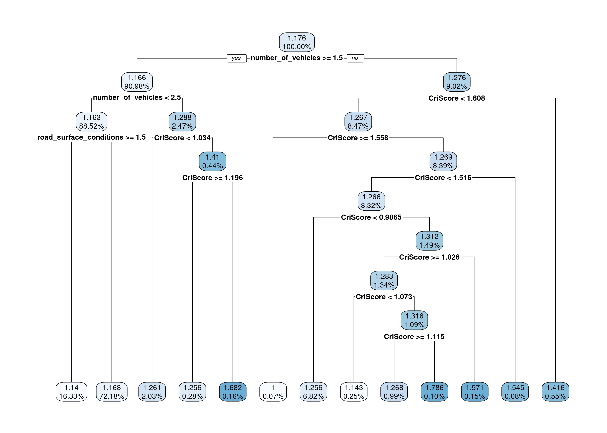

✔️ Summative Problem Set 02 | Solutions
DS202 - Data Science for Social Scientists
Here you will find model solutions to the second Summative Problem Set of DS202 (2022/23).
🥇 It is not uncommon that we are more pleased with solutions provided by the students than the template ones we created. The solutions on this page were compiled from students’ submissions and shared here with their permission.
Import packages
library(tidyverse)
library(tidymodels)
library(GGally)
library(ggsci)
library(cvms)
library(rpart)
library(rpart.plot)
library(kernlab)
# If you decide to use other packages, add them here
library(ggcorrplot)
library(ISLR2)
library(rsample)
library(broom)
library(e1071)⚙️ Setup
Let us take a quick look at the format of the df_filtered data frame that one would see after setting up the variables above:
knitr::kable(df_filtered %>% head(6))| accident_severity | number_of_vehicles | CriScore | road_surface_conditions |
|---|---|---|---|
| 2 | 2 | 0.755 | 1 |
| 1 | 1 | 0.755 | 1 |
| 2 | 2 | -0.211 | 1 |
| 1 | 2 | -0.211 | 2 |
| 1 | 2 | -0.211 | 1 |
| 1 | 2 | -0.211 | 1 |
This student cared to filter the data frame to keep only rows with valid values for the predictors based on the information provided in the data dictionary. This is a good practice, and we will do the same in the following:
# Function `all_of` just simply converts your custom variables,
# which are strings, into tidyverse column names
df_filtered <-
df_filtered %>%
filter(between(road_surface_conditions,1,7)) %>%
filter(number_of_vehicles >= 0) %>%
filter(between(accident_severity,1,3)) %>%
filter(CriScore >= 0)
knitr::kable(df_filtered %>% head(6))| accident_severity | number_of_vehicles | CriScore | road_surface_conditions |
|---|---|---|---|
| 2 | 2 | 0.755 | 1 |
| 1 | 1 | 0.755 | 1 |
| 1 | 2 | 1.799 | 2 |
| 1 | 2 | 1.799 | 1 |
| 1 | 2 | 1.799 | 2 |
| 1 | 1 | 1.799 | 2 |
🯠Questions
Q1. Understanding the Data (10 points)
Additional info we liked: On top of analysing the plots we provided, some students produced custom-made ones to investigate the correlations more closely. Usually, additional plots are unnecessary, but these helped them articulate their points better and were great additions to their responses. Mixed with model solutions, I include a few (adapted) examples of the plots that students produced.
Plot 1
The first plot in this image should be a density plot of accident severity. However, there is likely a bug in the library affecting the y-axis. The scale only goes up to 6, and a density plot should have an area under the curve that adds up to 1.
Here is a histogram instead:
plot_df <- df_filtered %>% group_by(accident_severity) %>% tally()
ggplot(plot_df, aes(x= accident_severity, y=n)) +
geom_col(width = 1, color="darkblue", fill="lightblue") +
geom_text(aes(label =n), vjust=-0.35) +
labs(title = "Histogram of the target variable",
x = "Accident severity", y = "Count") +
theme_bw()I created a histogram of accident severity to check the results of the first plot. Most of the data has an accident severity of 1; followed by a significantly lower amount of data with
accident_severityof 2; and finally, a small amount ofaccident_severity3. This aligns with the density plot in the image, so the plot is relatively accurate, but the histogram helps to understand the data with a bit more clarity. For example, in the first plot, we see no bump for accident_severity = 3, indicating that no accidents had a severity of 3. But the histogram shows that, in fact, some accidents did have a severity of 3, though these were very underrepresented in the data.
For the rest of your response, you would comment on the top row’s remaining three box panels. All you had to do was state which variables the correlation text referred to and whether the correlation was positive or negative. This was straightforward, and pretty much everyone answered that correctly.
One extra additional plot I have seen and liked was of a correlation matrix with just the selected variables:
corr <- cor(df_filtered)
ggcorrplot(corr, lab=TRUE, digits=2, lab_size=3) +
labs(title = "Correlation matrix of selected variables",
x = "Predictors", y = "Predictors") This helps us see that the variables were very much useless on their own. All correlations are close to zero, indicating that we will not likely get a very good model with just these three variables.
Although this might be a little frustrating, it is an excellent example of what you would encounter in a real-life setting. You will not always get beautiful correlations in real data. Also, this shouldn’t stop you from completing the rest of the problem set. This assignment tests your judgment of models (good or bad) and whether you can identify and point out the problem.
🤔 Question: If we had not restricted you to the variables above, would you be able to get a better model? Why or why not?
Q2. Time for Decision Tree (20 points)

I chose to describe the outer-left part of the decision tree. The tree starts with the root node containing \(100\%\) of the data, with an average prediction of an accident severity of \(1.176\), so slight (\(1\)) to severe (\(2\)), strongly leaning towards “slight.”
Then, the tree branches into two decision nodes depending on whether the
number_of_vehiclesinvolved in the incident was equal to or bigger than \(1.5\) (in effect, this measures whether two or more vehicles were involved).In \(\approx 91\%\) of these cases, this was true, leading us to our next decision node of focus: a decision node containing \(\approx 91\%\) of the overall data with a prediction of accident severity around \(1.166\). This decision node further splits according to the
number_of_vehicles_in the incident. The test is whethernumber_of_vehiclesis smaller than \(2.5\), in effect splitting the decision tree into cases where two vehicles were involved (left) versus those involving three or more (right).Once again, going with “yes”, we arrive at another decision node, containing \(89\%\) of the data, but still predicting a similar accident severity as the previous decision node and the root node, of \(\approx 1.2\). Here, the split is according to the
road_surface_conditionsand whether they were bigger than or equal to \(1.5\). Looking back at the data dictionary, we see that the severity of negative (‘bad’) road conditions increases with the number associated with this variable:
road_surface_conditions=1: corresponds to “dry”road_surface_conditions=2: corresponds to “wet or damp†and,road_surface_conditions=3: corresponds to “snow†.Therefore, a score of 1.5 or bigger indicates road conditions that are not dry.
Going with “yes†once again, we have reached our decision tree’s terminal, or leaf, node. Here, \(\approx 16\%\) of the data is left, with an accident severity score this time deviating slightly from the ones we had before, predicting
accident_severity= 1.14.It is interesting that the accident severity score slightly decreases, even though the road surface conditions worsen (with scores equal to or above \(1.5\)). However, seeing that, for instance, \(72\%\) of accidents did happen with road conditions similar to “dry,†it might just mean that the vast majority of accidents and beyond happened there, meaning that the likelihood of a distribution of high and low accident severity all accumulates under these conditions, bringing the average up due to a large amount of data.
Going one step further: decision trees are also good for exploratory analysis
If you look closer at the tree, you will see that:
- \(\approx 88.51\%\) of the accidents involve exactly two vehicles (\(16.33\% + 72.18\%\))
- \(\approx 2.47\%\) of the accidents involve more than two vehicles (\(2.03\% + 0.28\% + 0.16\%\)), and those have a higher mean
accident_severitythan the cases with exactly two vehicles (note the mean regression values in the leaf nodes). - The remaining \(9.02\%\) of the accidents involve only one vehicle; although rarer, they have higher mean
accident_severitythan the left-most branches of the tree.
Using the same predictors and cp value but just changing the target variable to is_grave_accident, and making it a classification task, we would get the tree below:
The description of the tree should be fairly similar to the regression case, so I will not replicate it here.
💡: All of the text formatting above (bold, italic, code, \(100\% \text{ of equations}\)), was done using markdown.
Q3. Predictions on the same data (5 points)
df_filtered_augmented <- augment(dt_model, df_filtered)
knitr::kable(df_filtered_augmented %>% head(10))| accident_severity | number_of_vehicles | CriScore | road_surface_conditions | .pred | .resid |
|---|---|---|---|---|---|
| 2 | 2 | 0.755 | 1 | 1.167544 | 0.8324561 |
| 1 | 1 | 0.755 | 1 | 1.256303 | -0.2563025 |
| 1 | 2 | 1.799 | 2 | 1.140474 | -0.1404741 |
| 1 | 2 | 1.799 | 1 | 1.167544 | -0.1675439 |
| 1 | 2 | 1.799 | 2 | 1.140474 | -0.1404741 |
| 1 | 1 | 1.799 | 2 | 1.415584 | -0.4155844 |
| 1 | 2 | 1.799 | 2 | 1.140474 | -0.1404741 |
| 1 | 2 | 1.799 | 1 | 1.167544 | -0.1675439 |
| 1 | 2 | 1.799 | 2 | 1.140474 | -0.1404741 |
| 1 | 3 | 1.799 | 1 | 1.256410 | -0.2564103 |
The new data frame
df_filtered_augmentedhas the same number of rows (i.e., observations) as the previous data framedf_filtered, but it has two additional columns. As can be seen by the output of thedimfunction:df_filteredhas four columns whiledf_filtered_augmentedhas a size of six.The new columns are called
.predand.residand respectively represent the predictions made by the decision tree model regarding the outcome variable accident severity and the residuals of these predictions. For every row, thus every observation in the data set, the decision tree predicts the value of accident severity (shown in the column.pred), given the tree-based model with three predictors. It also indicates a residual for that prediction (i.e., the difference between the actual value of accident severity observed in the original data set and the predicted value).The formula for the residual can be seen below:
\[Residual=AccidentSeverity−Prediction\]
Therefore, the smaller the residual (i.e., the closest to zero), the closer the prediction made is to the actual value of accident severity. Thus residuals are also used as a measure for the goodness of fit of a model to the data.
Q4. Goodness-of-fit: Metric (5 points)
This one is pretty easy; you just need to fill in with accident_severity (if regression) or is_grave_accident (if classification) and .pred:
df_filtered_augmented %>% metric_fn(accident_severity, .pred)# A tibble: 1 × 3
.metric .estimator .estimate
<chr> <chr> <dbl>
1 mae standard 0.286Q5. Tweak the decision tree (10 points)
Regardless of whether your task was regression or classification, you likely saw a decision tree that looks like the following:
An example of response is the following:
The
cp-value, or complexity parameter, is the minimum improvement the model needs to gain from each extra node and can therefore be taken as a cut-off value deciding whether extra nodes will be allowed and produced.By making the value a million times smaller, the improvement to the model needed to justify extra nodes is much, much smaller than before, resulting in a far larger and more complex decision tree.
This decision tree shows clear signs of overfitting. It is extremely complex and detailed, but to an extent where the explanatory power is overshadowed by the complexity and unnecessarily huge size of the decision tree. This tree might be ideal when testing the model on the training data, as its explanatory power is super high and detailed, with the incredibly large number of decision nodes and leaves it contains. However, when testing any test data, this decision tree as a model might be far too detailed that it likely won’t apply to much other data apart from the training set.
However, to conclude that it is indeed overfitting, we would need to split the data into training and test set, or via cross-validation, and compare both models in their abilities to fit the training vs. predict the test data.
(💡 Many of you overlooked that although the new tree is likely overfitting, we still need to test it on a test set to be sure.)
Q6. Support Vector Machines (20 points)
You were first asked to run the code below:
svm_model <-
svm_rbf() %>%
set_mode(str_to_lower(task_type)) %>%
fit(as.formula(formula_str), data=df_filtered)
df_filtered_augmented2 <- augment(svm_model, df_filtered)
df_filtered_augmented2 %>% metric_fn(accident_severity, .pred)# A tibble: 1 × 3
.metric .estimator .estimate
<chr> <chr> <dbl>
1 mae standard 0.200To which you could have responded something like:
The Mean Absolute Error (MAE) represents the mean of the absolute error rates. This SVM model generated an MAE score of \(0.200\), which means that the average error rate of the predictions made by the model was \(0.2\). The other model, the Decision Tree model, computed a score of \(\operatorname{MAE} = 0.286\) (as seen in Question 4), slightly worse.
Furthermore, one can compare the two metrics by looking at the residual distribution plots, which also show that the spread of residuals seems bigger in the Decision Tree model compared to the SVM one, where the outputs seem more condensed:
Code
plot_df1 <-
augment(dt_model, df_filtered) %>%
mutate(row_number=row_number())
g1 <- (
ggplot(plot_df1, aes(x=row_number, y=.resid))
+ geom_point(alpha=0.6)
+ theme_bw()
+ geom_hline(yintercept = c(-2.5,2.5), color="pink", linetype="dashed")
+ labs(title="Residual Distribution Plot of the SVM Model")
)
g1Code
plot_df1 <-
augment(svm_model, df_filtered) %>%
mutate(row_number=row_number())
g1 <- (
ggplot(plot_df1, aes(x=row_number, y=.resid))
+ geom_point(alpha=0.6)
+ theme_bw()
+ geom_hline(yintercept = c(-2.5,2.5), color="pink", linetype="dashed")
+ labs(title="Residual Distribution Plot of the SVM Model")
)
g1These visual observations are in line with the numerical MAE outputs, as well. Consequently, one can say that the Mean Absolute Error Score generated by the SVM model was smaller than the one generated by the Decision tree model, specifically by \(0.086\) units. As a result, purely in terms of this metric, one can say that the SVM model fits the data better, given the generated Mean Absolute Error score is smaller than the one produced by the Decision Tree Model. Obviously, several other metrics could (and normally should) be considered; however, when just looking at the MAE score, the SVM can be viewed as a better fit.
To explain the MAE I used the following websites as sources: 1. (2011). Mean Absolute Error. In: Sammut, C., Webb, G.I. (eds) Encyclopedia of Machine Learning. Springer, Boston, MA. 2. Statistics How To - (Absolute Error & Mean Absolute Error (MAE))[https://www.statisticshowto.com/absolute-error/] 3. EUMETrain - Mean Absolute Error (MAE) and Root Mean Squared Error (RMSE)
Q7. Tweaking the SVM (15 points)
You were asked to train an alternative SVM (any other kernel than the default one) and compare the results with the default one using your designated metric.
Here follows a model solution:
alternative_svm_model <-
svm_rbf() %>%
set_mode(str_to_lower(task_type)) %>%
fit(as.formula(formula_str), data=df_filtered, kernel='sigmoid')
df_filtered_augmented3 <- augment(alternative_svm_model, df_filtered)I decided to tweak my alternative SVM model by changing the kernel to ‘sigmoid’ in opposition to the regular radial setting used in this assignment’s original SVM model. To compare the model fit of the
alternative_svm_modelto thesvm_modellet us take a look at the metrics outputted by the model:
svm_modelparsnip model object
Support Vector Machine object of class "ksvm"
SV type: eps-svr (regression)
parameter : epsilon = 0.1 cost C = 1
Gaussian Radial Basis kernel function.
Hyperparameter : sigma = 5.38421450346088
Number of Support Vectors : 5310
Objective Function Value : -5858.098
Training error : 1.118995 alternative_svm_modelparsnip model object
Support Vector Machine object of class "ksvm"
SV type: eps-svr (regression)
parameter : epsilon = 0.1 cost C = 1
Gaussian Radial Basis kernel function.
Hyperparameter : sigma = 6.14325421927459
Number of Support Vectors : 5332
Objective Function Value : -5857.443
Training error : 1.118188 First, the alternative model has a few more support vectors when compared to the original model. Furthermore, both models achieve almost the same training error of \(\approx 1.12\).
However, now to answer the question and compare the metric, namely the Mean Absolute Errors (MAE): the
alernative_svm_model’s MAE score is \(0.2004705\), compared to thesvm_model’s MAE score of \(0.2004687\). Here, one can say that thesvm_modelhas a slightly lower MAE score, namely by a difference of \(0.0000018\). (We can’t even see that from R’s standard output below)
df_filtered_augmented3 %>% metric_fn(accident_severity, .pred)# A tibble: 1 × 3
.metric .estimator .estimate
<chr> <chr> <dbl>
1 mae standard 0.200The difference is barely observable, as one can attest additionally from the residual distribution plots. Nevertheless, the
svm_model’s MAE score is still lower than thealernative_svm_model, indicating a lower distribution of faulty predictions. As a result, one can conclude that the SVM model, with the radial kernel, is a better fit to the data than the alternative SVM model, with the sigmoid kernel. However, while acknowledging that objectively, the SVM model is a better fit according to the MAE metric, one needs to remember that the difference between the two model’s MAEs was negligible.
Q8.
👷 Work in progress 👷
Come back later for a model response